OwnCloud és una aplicació de programari lliure del tipus Servei d'allotjament d'arxius, que permet l'emmagatzematge en línia i aplicacions en línia. ownCloud pot ser instal·lat dins d'un servidor que disposi d'una versió recent de PHP i suport de SQLite, MySQL o PostgreSQL.

Utilitza aquesta comanda per crear un contenidor. El que esta després de launch és la versió que vols crear, i al final es el nom que vols crear.
lxc launch ubuntu:18.04 mywebUtilitza aquest command per executar, el bash et permet escriure commandes.
lxc exec myweb bashÉs un dels servidors web més populars en el món. Es troba ben documentat i ha estat utilitzat en bona part de la història del web, aconsegueix èxits per a ser escollit com el servidor més recomenat de pàgines web.
Abans d'instal·lar Apache, tenim que actualitzar les llistes de programes d'Ubuntu.
sudo apt-get update
sudo apt install apache2Pressionem Y i després Enter per continuar, així, la instal·lació es realitzarà.
Configuració tallafocs per permitir el tràfic web
Per fer-ho, verifica que el UFW té un perfil d'aplicació per a Apache amb la comanda següent:
sudo ufw app listEt mostrarà la següent informació
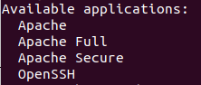
Si sol·licites la informació del perfil Apache Full, s'hauria de mostrar que el trànsit es troba habilitat per als ports 80 i 443:
sudo ufw app info "Apache Full"Et mostrarà la següent informació

Instalar MySQL per tenir un lloc on es desa usuaris... organitza i proveïrà accés a la base de dades.
S'ha d'utilitzar la comanda apt install per poder instal·lar aquest software:
sudo apt install mysql-serverExecutem un arxiu de comandes de seguretat que elimina alguns paràmetres perillosos, serà la següent comanda:
sudo mysql_secure_installationPreguntara si vols configurar el conector de validació de la contrasenya: VALIDATE PASSWORD PLUGIN.
Respon Y si estas d'acord, un altre resposta continuará sense realitzar habilitació.

Si has respos "Yes" et preguntará el nivell de contrasenya que vols:
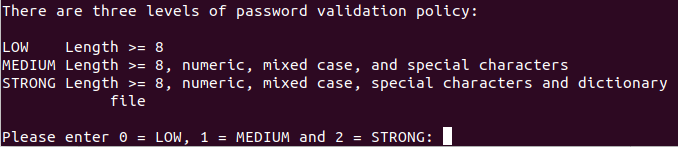
Assenyala el nivell de la teva contrasenya i et diu si vols canviar o no:
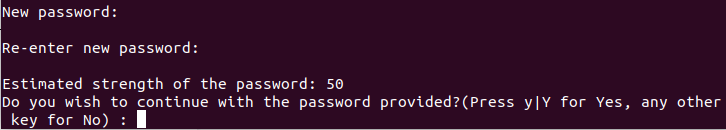
Les següents preguntes pressiona N pulsa ENTER en cada suggeriment.
Això diu si vols prohibir que el root inici sessió de remot, en aquest cas li he donat a no.
Diu si vols eliminar la base de dades de prova i accedir-hi, pressiona Y per eliminar la base de dades de prova.
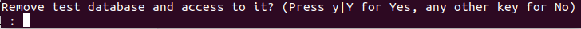
Despres pressiona Y per tornar a carregar les taules de privilegis.

En aquest punt, el teu sistema de bases de dades es troba configurat i pots seguir amb la instal·lació de PHP, el component final de la pila LAMP
PHP és el component de la configuració que processa codi per desplegar contingut dinàmic. Podeu executar arxius, connectar-se a les teves bases de dades MySQL per obtenir informació, i gestionar la visualització del contingut processat sobre el teu servidor web.
El podem configurar perquè s'executi sobre el servidor Apache i perquè es comuniqui amb la base de dades MySQL
sudo apt install php libapache2-mod-php php-mysql
Si un usuari demana un directori de servidor, Apache buscarà, en primera instància, un arxiu anomenat index.html. Volem que el servidor web li doni prelació als arxius PHP sobre qualsevol altre arxiu.
Per aconseguir-ho, dirigeix-te a la següent comanda per obrir el fitxer dir.conf en un editor de text amb privilegis de superusuari:
/etc/apache2/mods-enabled/dir.conf
S'hauria veure semblant a això:
<IfModule mod_dir.c>
DirectoryIndex index.html index.cgi index.pl index.php index.xhtml index.htm
</IfModule>
Mou el fitxer d'índex de PHP a la primera posició després de l'especificació DirectoryIndex, s'hauria de veure similar a:
<IfModule mod_dir.c>
DirectoryIndex index.php index.html index.cgi index.pl index.xhtml index.htm
</IfModule>
Quan acabis, grava i tanca l'arxiu pressionant les tecles Ctrl + X. Confirma els canvis pressionant Y, i tot seguit prem la tecla Enter per verificar el lloc de gravació de l'arxiu.
Hauràs reiniciar el servidor Apache perquè els teus canvis siguin reconeguts, ho pots fer mitjançant la comanda:
sudo systemctl restart apache2
Sample Output
● apache2.service - LSB: Apache2 web server
Loaded: loaded (/etc/init.d/apache2; bad; vendor preset: enabled)
Drop-In: /lib/systemd/system/apache2.service.d
└─apache2-systemd.conf
Active: active (running) since Tue 2018-04-23 14:28:43 EDT; 45s ago
Docs: man:systemd-sysv-generator(8)
Process: 13581 ExecStop=/etc/init.d/apache2 stop (code=exited, status=0/SUCCESS)
Process: 13605 ExecStart=/etc/init.d/apache2 start (code=exited, status=0/SUCCESS)
Tasks: 6 (limit: 512)
CGroup: /system.slice/apache2.service
├─13623 /usr/sbin/apache2 -k start
├─13626 /usr/sbin/apache2 -k start
├─13627 /usr/sbin/apache2 -k start
├─13628 /usr/sbin/apache2 -k start
├─13629 /usr/sbin/apache2 -k start
└─13630 /usr/sbin/apache2 -k startNOTE: Per ampliar la funcionalitat de PHP, tens la possibilitat d'instal·lar alguns mòduls addicionals. Per veure les opcions disponibles de mòduls i llibreries de PHP, envia els resultats d'apt search a less, un paginador que et permet navegar dins de la sortida d'un altre ordre.
apt search php- | less
Fes servir les fletxes per moure't cap amunt i avall, i prem Q per sortir.
Com a resultat obtindrem tots els components opcionals que podem instal·lar. El sistema et mostrarà una descripció curta de cada un d'ells:
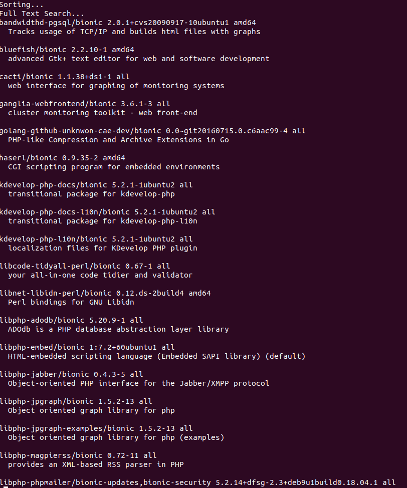
Per indagar més sobre les funcionalitats de cada mòdul, simplement pots buscar a la web la seva descripció, o alternativament, pots veure la descripció llarga de cada paquet, digitant:
apt show package_name
NOTE: "
package_name" hace referencia al nombre del paquete que deseas instalar
La sortida serà extensiva, amb un camp en particular anomenat Descripció que tindrà una explicació més extensa sobre la funcionalitat que el mòdul proveeix.
Per exemple, per veure les funcionalitats de la lliçó php-cli, podries digitar:
apt show php-cli
En companyia de molta més informació, veuràs alguna cosa com el següent:
Output ... Description: command-line interpreter for the PHP scripting language (default) This package provides the /usr/bin/php command interpreter, useful for testing PHP scripts from a shell or performing general shell scripting tasks. . PHP (recursive acronym for PHP: Hypertext Preprocessor) is a widely-used open source general-purpose scripting language that is especially suited for web development and can be embedded into HTML. . This package is a dependency package, which depends on Ubuntu's default PHP version (currently 7.2). ...
Si després de la teva consulta decideixes instal·lar algun paquet, ho pots fer mitjançant el comandament apt install, de la mateixa manera que ho has fet per a un altre programari.
Si t'adones que necessites instal·lar php-cli, pots escriure:
sudo apt install php-cli
Si vols instal·lar més d'un mòdul, ho pots fer listándolos separats per espai, després de la comanda apt install, semblant al següent:
sudo apt install package1 package2 ...
Utilitza aquestes comandes per instalar el OwnCloud.

Instalar dependencias
Despues de la instalacio de OwnCloud, tienes que instalar las dependencias PHP necesarias. Para hacer esto, ejecuta el comando php -v.
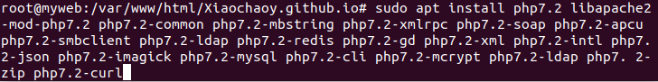
Configurar PHP
Ahora tenemos que configurar PHP, solo tiene que solucionar 2 opciones. Usa este comando para entrar al archivo:
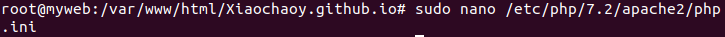
Las dos opciones que tienes que ajustar son estos:
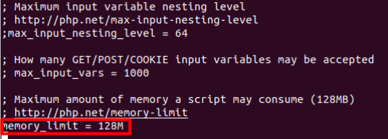
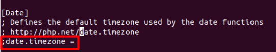
Luego de esto reinicia Apache con el comando:
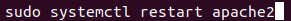
Crea la base de datos
Ahora necesitamos crear la base de datos. Para hacer esto, ejecuta el comando.
Primero se te pedirá tu contraseña de sudo y luego la contraseña de usuario root de MySQL.
Usas este comanda para crear un base de datos.
Luego crea un nuevo usuario de base de datos con el comando:
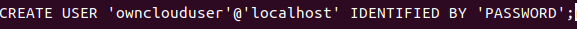
Proporciona a los nuevos usuarios permisos para la nueva base de datos con el comando:
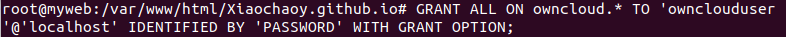
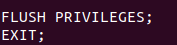
Descomprime y mueve el archivo ownCloud
Ahora tenemos que descomprimir y mover el archivo ownCloud y luego darle los permisos adecuados. Voy a suponer que descargaste el archivo a tu directorio de inicio. Con eso en mente, todo se puede hacer con los siguientes comandos:
cd ~/
unzip unzip owncloud-*.zip
sudo mv owncloud /var/www/html/
sudo chown -R www-data:www-data /var/www/html/owncloud/
sudo chmod -R 755 /var/www/html/owncloud/Configurar Apache
Ahora debemos configurar Apache para que conozca nuestro nuevo sitio ownCloud. Crea un nuevo archivo conf con el comando:
sudo nano /etc/apache2/sites-available/owncloud.confEl contenido de ese archivo debe ser:
<VirtualHost *:80>
ServerAdmin admin@example.com
DocumentRoot /var/www/html/owncloud/
ServerName example.com
ServerAlias www.example.com
Alias /owncloud "/var/www/html/owncloud/"
<Directory /var/www/html/owncloud/>
Options +FollowSymlinks
AllowOverride All
Require all granted
<IfModule mod_dav.c>
Dav off
</IfModule>
SetEnv HOME /var/www/html/owncloud
SetEnv HTTP_HOME /var/www/html/owncloud
</Directory>
ErrorLog ${APACHE_LOG_DIR}/error.log
CustomLog ${APACHE_LOG_DIR}/access.log combined
</VirtualHost>
Ahora tenemos que habilitar el sitio y los módulos necesarios. Estos pasos se manejan con los siguientes comandos:
sudo a2ensite owncloud.conf sudo a2enmod rewrite sudo a2enmod headers sudo a2enmod env sudo a2enmod dir sudo a2enmod mime
Reinicia Apache con el comando:
Final
Abre un navegador y en el URL pon http:/servidor_IP/owncloud.
Deberías ser recibido por el instalador de ownCloud (Figura A), donde solo necesitas crear un usuario administrador e ingresar la información para la base de datos.
Paquetes LAMP:https://www.digitalocean.com/community/tutorials/como-instalar-en-ubuntu-18-04-la-pila-lamp-linux-apache-mysql-y-php-es
OwnCloud:https://maslinux.es/como-instalar-owncloud-en-ubuntu-18-04/